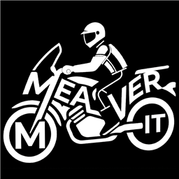
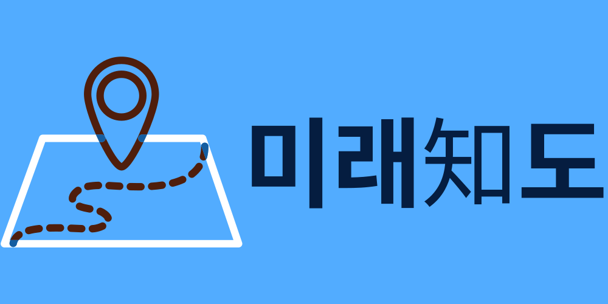

윤태형YUN TAE HYEONG
백엔드 개발자
요청이 한꺼번에 몰리는 자리를 맡아 왔습니다.
티켓 예매 대기열, 실시간 모의투자 서비스의 인증, 선착순 쿠폰 시스템의 데이터 파이프라인.
최근 네 개의 팀 프로젝트에서 제가 맡은 범위는 모두 동시에 들어온 요청이 서로를 덮어쓰지 않게 만드는 쪽 이었습니다.
그 전에는 3년 3개월 동안 헬프데스크 운영과 IT 자산 관리를 하며 장애 요청을 받는 쪽에 있었습니다.
운영이 무엇 때문에 힘들어지는지 겪어봤습니다. 돌아가는 코드와 운영할 수 있는 코드는 다르고, 그 차이를 전제로 개발합니다.
측정하지 않은 성능 수치는 이 페이지에 쓰지 않았습니다. 대신 각 결과를 어디까지 확인했는지 표기했습니다.
측정됨 실행 결과나 저장된 기록으로 확인한 값
시나리오 테스트 코드·수동 시나리오로 동작만 확인
세 가지 축
Core
인증·세션AUTH
세션 기반 로그인부터 JWT 발급·회전, 탈취 의심 시 전체 무효화까지 두 프로젝트에서 인증 전 구간을 맡았습니다.
WebSocket 연결 시점의 토큰 검증과 권한 분리도 포함합니다.
MINGPARK · TOCKTALKS
동시성 제어CONCURRENCY
Redis Sorted Set 대기열로 예매 화면 진입 인원을 제어하고, 방 참여·상태 변경에는 비관적 락과 락 획득 후 재검증을 적용했습니다.
MINGPARK · TOCKTALKS
대용량 데이터DATA PIPELINE
회원 100만, 주문 1,000만 건 규모의 더미 데이터를 5단계 시더로 생성했습니다. 팀 전체가 같은 데이터 위에서 부하 테스트와 정합성 검증을 돌릴 수 있게 됐습니다.
Mealiver-IT
기술과 사용 맥락
Skills
기술 무엇을 했는지
Java 21Spring Boot 4.x
도메인 단위 패키지 구조, REST API, 트랜잭션 경계 설계
Spring Security
HTTP 세션 로그인, JWT 발급·회전, Kakao OAuth2 연동, WebSocket 연결 인증, 관리자·일반 권한 분리
Redis
Sorted Set 대기열과 ZRANK 순번, Refresh 토큰 저장, 로그인 실패 카운터
MySQLJPA / Hibernate
엔티티·상태 enum 설계, 비관적 락, 청크 단위 배치 인서트
WebSocketSTOMP
연결 핸드셰이크 시 토큰 검증, 방 단위 구독 경로 설계
PythonFlask
ETA·경로 탐색 API 서버, 학습된 AI 모델 추론 연동
GCP
Ubuntu 인스턴스 환경 구성, 팀 공용 디렉터리·가상환경 권한 설정
Docker
로컬·팀 공용 DB 환경 컨테이너 구성
테스트JUnit 5 · k6
동시 요청 시나리오 검증, Testcontainers 기반 통합 테스트 환경 사용
프로젝트
Projects
프로젝트 역할 기간 한 줄
MINGPARK 인증·세션
2026.06
콘서트 예매 서비스. 오픈 직후 트래픽을 대기열로 흘려보내는 구조
TOCKTALKS Auth
2026.07
실시간 주가 기반 모의투자 대결·커뮤니티 서비스
Mealiver-IT 데이터
2026.08
배달앱 선착순 쿠폰 발급 시스템. 재고 1만 / 동시 2만 요청 시나리오
AI-BASED-ETA 서버
2024.03
VDS 교통 데이터로 학습한 모델을 쓰는 도착 시간 예측 서비스 (캡스톤)
2026.06 – 07 · 콘서트 예매 MINGPARK공연 탐색부터 대기열 입장, 좌석 선점, 포인트 결제와 환불까지 하나의 흐름으로 묶은 예매 서비스입니다.
기간 2026.06.01 ~ 2026.07.07 (약 5주)
팀 3명 (백엔드)
내 역할 회원 인증·세션, Redis 대기열, 마이페이지 스택 Java 17 · Spring Boot · Spring Security · MySQL · Redis · JPA
저장소 github.com/minggure/Mingpark ↗
담당 범위
일반 회원가입·로그인과 세션 인증, 관리자/일반 권한 분리
콘서트별 대기열 등록·순번 조회·입장 허용 스케줄러
마이페이지: 예매 내역 조회, 공연 시작 전 환불
대기열: 재요청해도 순번이 유지되도록 시나리오
상황 예매 오픈 직후 접속이 예매 화면으로 그대로 들어오면, 좌석 조회와 선점 요청이 한꺼번에 DB로 내려갑니다.
원인 입장 인원을 제어하는 장치가 없었고, 사용자가 순번을 다시 조회할 때마다 대기열에 재등록되어 순번이 뒤로 밀렸습니다.
조치
queue:wait:concert:{concertId} Sorted Set에 진입 시각을 score로 저장하고, 순번은 ZRANK로 조회했습니다.
이미 등록된 사용자는 다시 넣지 않으므로 재요청해도 같은 순번을 유지 합니다.
1초 주기 스케줄러가 콘서트별 활성 인원을 확인해 최대 50명 까지 입장을 허용하고,
입장자는 queue:active:concert:{concertId} Set으로 옮겨 5분 TTL을 부여했습니다.
결과 예매 화면에 동시에 들어오는 인원이 50명으로 고정되고, 결제 완료·이탈 시 즉시 자리를 회수하도록 정리했습니다.
남은 과제
k6 스크립트(가상 사용자 10명 / 100초)로 중복 요청 응답 코드만 확인했고 결과 파일을 저장하지 않아 처리량·지연 개선 수치는 제시하지 않습니다.
입장 허용 인원 50명도 서버 여력을 측정해서 정한 값이 아니라 시나리오상 정한 값입니다.
인증 주체가 둘로 늘어나며 생긴 NPE 시나리오
상황 제가 세션 기반 로그인을 올린 뒤, 팀원이 Kakao OAuth2 로그인을 추가했습니다. 그 직후 제가 만든 마이페이지 API들에서 NPE가 발생했습니다.
원인 로그인 경로가 두 개로 갈라지면서 인증 주체의 형태가 달라졌는데, 기존 API는 한쪽 형태만 가정하고 인증 정보를 꺼냈습니다.
조치 인증 정보를 꺼내는 지점을 한 곳으로 모아, 어느 경로로 로그인했는지와 무관하게 회원을 식별하도록 바꿨습니다. 콘서트 등록·포스터 업로드는 관리자 권한으로 제한했습니다.
결과 두 로그인 경로가 같은 API를 공유할 수 있게 되었습니다.
배운 점 내 기능이 멀쩡해도 팀원이 인증 방식을 하나 더 붙이면 깨질 수 있다는 걸 겪었습니다. 이후 프로젝트에서는 인증 주체를 꺼내는 통로를 처음부터 하나로 두었습니다.
2026.07 · 실시간 모의투자 TOCKTALKS같은 시드머니로 방을 만들어 정해진 시간 동안 수익률을 겨루고, 인증된 투자 카드를 커뮤니티에 공유하는 서비스입니다. 실시간 주가는 KIS Open API에서 받아옵니다.
기간 2026.07.16 ~ 2026.07.27 (2주)
팀 5명 (백엔드)
내 역할 Auth, Room — 인증 전 구간과 방 참여·대결 로직스택 Java 21 · Spring Boot 4.1 · Spring Security · JWT · Redis · MySQL · WebSocket/STOMP
저장소 github.com/TockTalks/ureca_TockTalks ↗
담당 범위
자체 회원가입·로그인(BCrypt)과 Kakao OAuth2 소셜 로그인
Access/Refresh 토큰 발급·재발급·폐기, WebSocket 연결 시점 인증
방 생성·참여와 대결 진행 로직
Refresh 토큰을 1회용으로 회전시키고, 재사용을 탈취 신호로 처리 시나리오
상황 Access 토큰은 만료되면 재발급해야 합니다. 그런데 Refresh 토큰을 유효기간 내내 그대로 쓰면, 한 번 유출된 토큰이 14일 동안 살아 있습니다.
조치
Access는 1시간 , Refresh는 14일 로 두고 Refresh를 Redis에 저장했습니다.
재발급 때마다 Refresh를 1회용으로 회전 시키고, 이미 회전된 토큰이 다시 들어오면
해당 계정의 토큰을 모두 선제적으로 무효화 하도록 했습니다.
결과 탈취가 의심되는 상황을 "이미 쓴 토큰이 또 들어왔다"는 시점에 잡아 차단합니다. 로그아웃·회원 탈퇴 시에도 즉시 전체 폐기합니다.
남은 과제 정상 사용자가 네트워크 재시도로 같은 Refresh를 두 번 보내면 전체 무효화로 이어질 수 있습니다. 재시도와 실제 탈취를 구분하는 유예 처리는 넣지 못했습니다.
로그인 실패 잠금과, Redis가 죽어도 로그인은 막히지 않게 시나리오
상황 비밀번호 대입 시도를 막아야 하지만, 잠금 카운터를 서버 메모리에 두면 재시작 때 초기화되고 인스턴스마다 값이 갈립니다.
조치 실패 횟수를 Redis 공용 카운터로 관리해 5회 실패 시 5분 잠금을 적용했습니다. 동시에 인증 검사에는 fail-open 을 적용해, Redis 장애 시 잠금 검사를 건너뛰고 로그인 자체는 되도록 했습니다.
결과 인스턴스 재시작에도 잠금 상태가 유지되고, 캐시 장애가 로그인 전면 차단으로 번지지 않습니다.
남은 과제 fail-open은 가용성을 택한 대신 장애 중에는 대입 방어가 열립니다. 어느 쪽을 택할지는 서비스 성격에 따라 다시 판단해야 한다고 봅니다.
JWT 시크릿 기본값 제거 측정됨
상황 개발 편의로 넣어둔 JWT 시크릿 기본값이 설정에 남아 있었습니다. 환경변수를 안 넣어도 서버가 떠버리는 상태였습니다.
조치 기본값을 제거하고 JWT_SECRET 환경변수를 필수로 바꿔, 값이 없으면 서버 부팅이 실패 하도록 했습니다.
결과 플레이스홀더 시크릿이 그대로 배포될 경로를 막았습니다. 설정 누락은 런타임이 아니라 부팅 시점에 드러납니다.
방 참여 경합: 락을 잡고 나서 다시 검사 시나리오
상황 정원이 찬 방이나 이미 시작된 방에 여러 사용자가 동시에 참여 요청을 보내면, 검사와 반영 사이에 상태가 바뀔 수 있습니다.
조치 방 상태 변경 구간에 비관적 락을 적용하고, 락을 획득한 뒤 참여 조건을 다시 검사 했습니다.
결과 락을 기다린 요청은 바뀐 상태를 보고 판단하므로, 정원을 넘겨 참여하는 경로가 막혔습니다.
남은 과제 방 단위 락이라 같은 방의 참여 요청은 직렬화됩니다. 대규모 인원을 받는 방이 생기면 참여 큐 분리를 고민해야 합니다.

2026.08 · 선착순 쿠폰 Mealiver-IT배달앱의 매일 오전 11시 선착순 쿠폰 발급을 가정한 시스템입니다. 재고 1만 개에 동시 요청 2만 건이 들어와도 초과 발급 0과 1인 1매를 지키는 것이 목표였습니다.
기간 2026.08.06 ~ (2주)
팀 6명
내 역할 데이터·더미 파이프라인 — 검증용 데이터셋 생성스택 Java 21 · Spring Boot · MySQL 8.0 · Flyway · JDBC 배치 · Docker
저장소 github.com/Mealiver-IT/Mealiver-IT-BE ↗
담당 범위
회원·주문·등급·캠페인·발급 이력을 순서대로 채우는 5단계 시더 체인
대량 인서트 성능 확보 (청크 배치, JDBC 옵션)
부하 테스트가 의미를 가지려면 데이터가 먼저 있어야 했습니다 측정됨
상황 초과 발급과 중복 발급은 데이터가 쌓인 상태에서만 드러납니다. 빈 테이블에 요청을 쏘면 인덱스도 락 경합도 실제와 다르게 동작합니다.
원인 등급·주문 이력에 의존하는 발급 조건이 있어, 회원만 만들어서는 조건 분기를 태울 수 없었습니다.
조치
회원 → 주문 → 등급 → 캠페인 → 발급 이력 순서로 의존성을 따라가는 5단계 시더 체인 을 만들었습니다.
전체를 한 트랜잭션에 담지 않고 청크 단위 배치 인서트로 끊고,
rewriteBatchedStatements=true로 네트워크 왕복을 줄였습니다.
결과
가상 회원 100만 , 주문 1,000만 , 발급 이력 약 300만 건의 데이터셋을 구성해,
팀원 전원이 같은 규모·같은 분포 위에서 검증을 돌릴 수 있게 했습니다.
남은 과제 시더 실행 시간을 단계별로 기록해두지 않아 배치 옵션이 얼마나 기여했는지는 수치로 말할 수 없습니다. 다음에는 단계별 소요 시간부터 남기겠습니다.
이 데이터로 팀이 확인한 것 측정됨
범위 아래 부하 테스트는 팀원(부하 테스트 담당)이 수행했고, 제가 만든 데이터셋 위에서 돌아갔습니다.
결과
재고 100 개에 동시 요청 50 건 리허설에서 초과 발급 0, 요청 50건 모두 정상 발급.
동일 Idempotency-Key로 같은 요청을 100 회 보냈을 때 신규 발급 1건 + 이미 처리됨 99건.
남은 과제 2만 유저 스케일 테스트는 로컬 TCP 소켓 한계로 재실행 대기 상태입니다. 목표 수치(2만 동시 요청)는 아직 달성 기록이 아니라 시나리오입니다.

2024.03 – 06 · 세종대 캡스톤 AI-BASED-ETA한국도로교통공사 공공데이터의 VDS 데이터로 학습한 모델을 써서, 출발 시각에 따라 달라지는 도착 시간과 최단 시간 경로를 계산하는 서비스입니다.
기간 2024.03 ~ 2024.06 (4개월) · 세종대학교 캡스톤
팀 4명
내 역할 GCP 서버 구축·배포, 동적 가중치 A* 설계, AI 모델 연동 스택 Python 3.6 · Flask · Graph WaveNet · GCP (Ubuntu) · 카카오맵
저장소 github.com/AI-based-ETA/GCP-Server ↗ · 조직 전체 ↗
담당 범위
AI 모델이 예측한 속도를 간선 가중치로 쓰는 동적 A* 알고리즘 설계·구현 (같은 도로라도 도착 시각이 달라지면 가중치가 바뀝니다)Flask API 서버 구현: /find_path, /get-node-info
학습된 모델 추론 연동 (예측 요청 → 속도 시간표 → 경로 계산)
GCP 인스턴스에 서버 구축·배포 , Python 버전 정렬과 팀 공용 가상환경 권한 구성
모델이 60분까지만 예측하는데, 경로는 4시간이었습니다 측정됨
상황 서울→부산처럼 긴 경로는 이동 중에 도로 상황이 바뀝니다. 출발 시각의 속도로 끝까지 계산하면 뒤쪽 구간이 전부 틀어집니다.
원인 사용한 Graph WaveNet은 5분 간격 12스텝, 60분 까지만 예측합니다. 그 뒤 구간의 속도는 아예 데이터가 없었습니다.
조치
경로를 따라가며 누적 시각을 계산하고, 누적 시각이 마지막 예측 요청 시점으로부터 1시간 5분 을 넘어가면
그 시점을 기준으로 속도 예측을 다시 요청 하는 Sliding Window 방식을 넣었습니다.
A*의 휴리스틱은 목적지까지의 위경도 유클리드 거리, 간선 비용은 그 시각의 예측 속도로 계산한 소요 시간 (거리÷속도)입니다.
가중치가 고정된 그래프가 아니라, 탐색이 진행돼 시각이 흐르면 같은 간선의 비용도 달라지는 구조입니다.
결과
서울시청→인천시청 55분 , 서울→부산 4시간 10분 (예측 5회 연속 호출)으로 경로와 ETA를 산출했습니다.
남은 과제 예측 지평이 길어질수록 정확도가 떨어집니다. 교통 예측 모델의 공통 한계이고, 저희도 해결하지 못했습니다. 검증도 네이버 지도와의 단순 비교 수준이었습니다.
팀 전원이 같은 서버에서 모델을 돌릴 수 있게
상황 학습 환경은 Python 3.6, GCP Ubuntu 20.04 기본은 3.8이라 모델 로딩부터 실패했습니다. 팀원들이 각자 환경을 만들면 재현이 안 됐습니다.
조치 인스턴스의 Python을 학습 환경과 같은 버전으로 맞추고, 공용 디렉터리를 chmod 2775와 그룹 소유로 두어 팀원 모두가 같은 가상환경을 쓰도록 구성했습니다.
결과 "내 로컬에서는 됩니다"가 사라졌습니다. 모델 파일과 추론 코드를 한 경로에서 공유했습니다.
경력 · 학력 · 자격
Record
2026.04 – 10진행 중
[LG유플러스] 유레카 SW교육과정 4기부트캠프
백엔드 과정 (2026.04.06 ~ 2026.10.28). MINGPARK · TOCKTALKS · Mealiver-IT 세 개의 팀 프로젝트를 연속으로 수행했습니다.
2019.02 – 2026.02졸업
세종대학교 컴퓨터공학과
학점 3.68 / 4.5
2020.09 – 2025.043년 3개월
클라우드시큐리티 주식회사경영지원
헬프데스크 운영 관리 보조, 사내 지원 요청 대응
IT 유·무형 자산 관리와 전산 자산 내부 컴플라이언스 대응
신규 입사자 온보딩 지원, 공용 공간·비품 관리
2024 – 2026자격·어학
SQLD · 정보처리기사 · TOEIC
SQLD (SQL 개발자) · 2026.09 합격 · 한국데이터산업진흥원정보처리기사 · 2025.06 · 한국산업인력공단TOEIC 745 · 2024.11
재학 중
세종대학교 중앙동아리 인터페이스코딩 동아리
기장을 맡아 프로그래밍 전시회에 참여하고, 비전공자·문과생을 위한 정기 스터디를 개설해 운영했습니다.